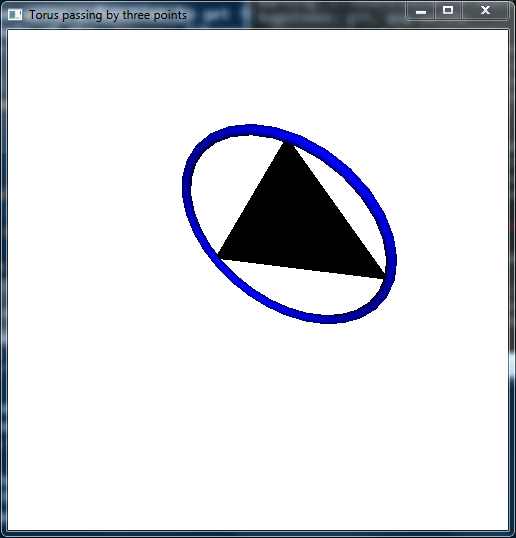

Drawing a torus with Haskell
Problem: With the Haskell OpenGL library, how to draw a torus passing by three given points?
Firstly, we write a function to get the circle passing by three given points, with the help of the linear library. The imported toList function will be used later.
module TransformationMatrix
where
import Data.Foldable (toList)
import Linear
-- | the plane passing by three points
plane3pts :: Num a => V3 a -> V3 a -> V3 a -> (V3 a, a)
plane3pts p1 p2 p3 = (V3 xcoef ycoef zcoef, offset)
where
V3 p1x p1y p1z = p1
V3 p2x p2y p2z = p2
V3 p3x p3y p3z = p3
xcoef = (p1y-p2y)*(p2z-p3z)-(p1z-p2z)*(p2y-p3y)
ycoef = (p1z-p2z)*(p2x-p3x)-(p1x-p2x)*(p2z-p3z)
zcoef = (p1x-p2x)*(p2y-p3y)-(p1y-p2y)*(p2x-p3x)
offset = p1x*xcoef + p1y*ycoef + p1z*zcoef
-- | plane given a point and a normal
plane1ptnormal :: Num a => V3 a -> V3 a -> (V3 a, a)
plane1ptnormal p normal = (normal, p `dot` normal)
-- | circumcenter and circumradius given three points
circleCenterRadius :: (Num a, Fractional a, Floating a) => V3 a -> V3 a -> V3 a
-> ((V3 a, a), V3 a)
circleCenterRadius p1 p2 p3 = ((center, radius), coefs1)
where
p12 = (p1 ^+^ p2) ^/ 2
p23 = (p2 ^+^ p3) ^/ 2
v12 = p2 ^-^ p1
v23 = p3 ^-^ p2
(coefs1, offset1) = plane3pts p1 p2 p3
(coefs2, offset2) = plane1ptnormal p12 v12
(coefs3, offset3) = plane1ptnormal p23 v23
a = V3 coefs1 coefs2 coefs3
b = V3 offset1 offset2 offset3
center = inv33 a !* b
op1 = p1 ^-^ center
radius = norm op1The circleCenterRadius function returns the center of the circle passing by the points p1, p2, p3, its radius \(R\), as well as a vector perpendicular to the plane passing by these points.
Now we write a function which returns an appropriate transformation matrix. The torus drawn by Torus in the GLUT library is always centered at \((0,0,0)\) and it is in the \(xy\)-plane (the plane \(z=0\)). Setting its outer radius to \(R\), we are looking for the transformation matrix which maps this torus to the desired torus.
-- | the transformation matrix for a torus passing by three points
transformationMatrix :: (Real a, Floating a) => V3 a -> V3 a -> V3 a -> ([a], a)
transformationMatrix p1 p2 p3 =
(concatMap toList (toList (mkTransformationMat m center)), radius)
where
((center, radius), plane) = circleCenterRadius p1 p2 p3
V3 a b c = plane
measure = sqrt (a*a + b*b + c*c)
a' = a / measure
b' = b / measure
c' = c / measure
n = V3 a' b' c'
s = sqrt (a'*a' + b'*b') -- TODO: case a=b=0
a'' = a' / s
b'' = b' / s
u = V3 b'' (-a'') 0
v = cross n u
m = transpose $ V3 u v nThe function transformationMatrix also returns the radius \(R\). The matrix it returns is given by a list, thanks to the toList function. We return this list instead of a matrix of the linear library in order to use it in OpenGL. The transformation matrix is applied with the multMatrix function of OpenGL:
module TestTransformationMatrix
where
import Data.Tuple.Extra (fst3, snd3, thd3, second)
import Graphics.Rendering.OpenGL.GL
import Graphics.UI.GLUT
import Linear (V3 (..))
import TransformationMatrix
type Point = (GLfloat,GLfloat,GLfloat)
pointToV3 :: Point -> V3 GLfloat
pointToV3 (x,y,z) = V3 x y z
myTriplet :: (Point, Point, Point) -- the three points for our test
myTriplet = ((-1,5,1),(2,1,8),(-5,0,3))
white,black,blue :: Color4 GLfloat
white = Color4 1 1 1 1
black = Color4 0 0 0 1
blue = Color4 0 0 1 1
tmatAndRadius :: ([GLfloat], GLdouble)
tmatAndRadius = second realToFrac (transformationMatrix
(pointToV3 $ fst3 myTriplet)
(pointToV3 $ snd3 myTriplet)
(pointToV3 $ thd3 myTriplet))
display :: DisplayCallback
display = do
clear [ColorBuffer, DepthBuffer]
loadIdentity
preservingMatrix $ do
m <- newMatrix RowMajor (fst tmatAndRadius) :: IO (GLmatrix GLfloat)
multMatrix m
materialDiffuse Front $= blue
renderObject Solid $ Torus 0.2 (snd tmatAndRadius) 30 30
renderPrimitive Triangles $
mapM_ (\(x, y, z) -> vertex $ Vertex3 x y z)
[fst3 myTriplet, snd3 myTriplet, thd3 myTriplet]
swapBuffers
resize :: Size -> IO ()
resize s@(Size w h) = do
viewport $= (Position 0 0, s)
matrixMode $= Projection
loadIdentity
perspective 45.0 (w'/h') 1.0 100.0
lookAt (Vertex3 0 0 (-20)) (Vertex3 0 0 0) (Vector3 0 1 0)
matrixMode $= Modelview 0
where
w' = realToFrac w
h' = realToFrac h
main :: IO ()
main = do
_ <- getArgsAndInitialize
_ <- createWindow "Torus passing by three points"
windowSize $= Size 500 500
initialDisplayMode $= [RGBAMode, DoubleBuffered, WithDepthBuffer]
clearColor $= white
materialAmbient Front $= black
lighting $= Enabled
light (Light 0) $= Enabled
position (Light 0) $= Vertex4 0 0 (-100) 1
ambient (Light 0) $= black
diffuse (Light 0) $= white
specular (Light 0) $= black
depthFunc $= Just Less
shadeModel $= Smooth
displayCallback $= display
reshapeCallback $= Just resize
idleCallback $= Nothing
mainLoopAnd here is the result:

Thanks to this technique, I made a Haskell library to draw Hopf tori with OpenGL. This library is available here.